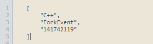
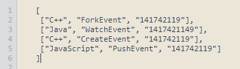
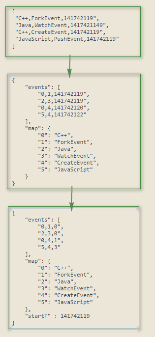
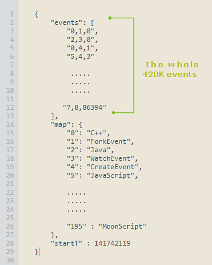

<div class="conterntWrapper">
    <div class="col-md-12">
        <p>
            I got a good response for my previous visualization <a href="http://graphoverflow.com/graphs/an-hour-on-github.html" target="_blank">"An hour in github"</a> eventually been submitted even in chromeexperiment. So one of the comments was really interesting ,it was something like "It would have been nice that we can get a data on a full day or a month" . So here it is , "A day on github".
        </p>
        <p>
            I went an fetch the whole data from <a href="http://www.githubarchive.org/" target="_blank">GitHub Archive</a>. GitHub Archive is a project by Ilya Grigorik , Thanks once again <a href="https://github.com/igrigorik" target="_blank">Ilya</a>. Yes the data was huge like 420K events one December 2014. Im sure today its more than half a million. The size was the problem , even for an hour the row JSON ~100MB so for a day its around 1GB. But I don't want that whole data, I want to show only when an event happen and what that event tagged programming language is, so the format is like this
              timestamps value is divided by 1000 to eliminate microsecond values , so from around 1GB of JSON data what I want is around 23MB,
        </p>
        <p>
            So even that is a huge data to parse in font-end with JavaScript, So the as a minification process I converted the data into this format
            so now 4 event look like this formant
            Still its not enough so I went again tried different options. I created a map of events and languages to numeric values and use this value in the event array, since it is so repetitive I got a huge reduction in size and it transformed like this
             as final touch created the starting time as an obejct and just replace the time from starting time. Finally able to manage to this micro format around 5MB (<a href="../js/data/git-day.json">download data</a>).
             So the first element in event array should be readed as ['language','type','time'] ie ['C++','ForkEvent','1417421149'] Please let me know if you have more shrinking to suggest.
        </p>
        <p>
            <a href="http://threejs.org/" target="_blank">Three js</a> is used to create the scenes and animation. Each event is representated as a partice. Particle color is similar to what is used in  in <a href="http://graphoverflow.com/graphs/an-hour-on-github.html" target="_blank">"An hour on github"</a> (events tab). You can see the tag wise list of event count JavaScript, Java, Python, PHP, Ruby, CSS, C++, C.</p>
        </p>
    </div>
